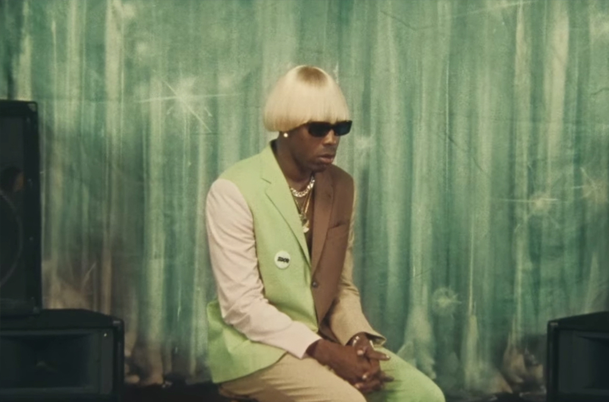
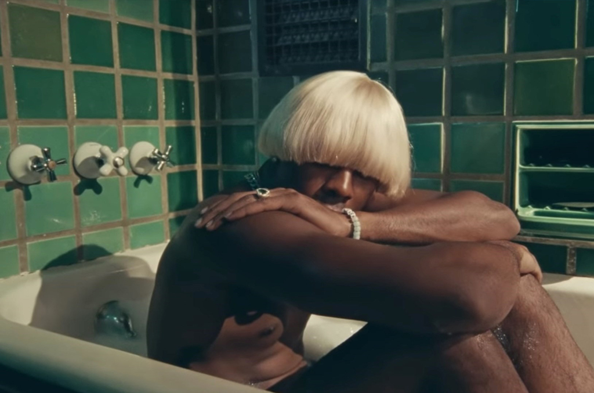
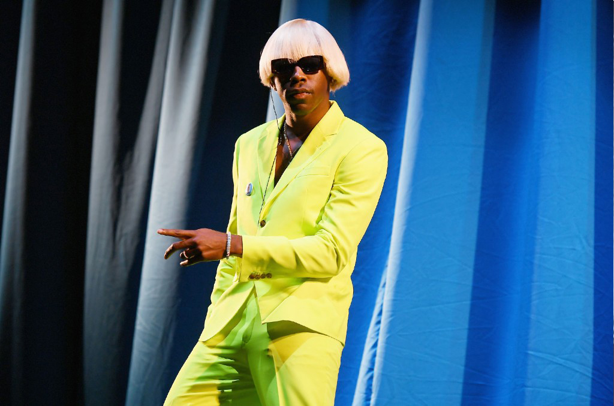
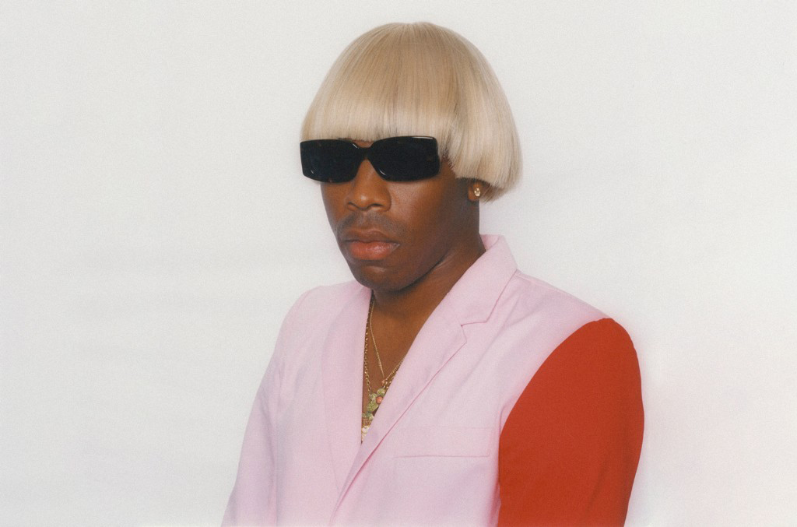

One, one, one, one, one, one, one, one, one, one
Runnin', runnin', runnin', runnin'
Uh!
Heaven, heaven
(Ooh) he's coming
Ridin' 'round town, they gon' feel this one
Ridin' 'round town, they gon' feel this one
Ridin' 'round town, they gon' feel this one
Ridin', ridin' 'round town, they gon' feel this one (oh)
(Got my, got my, got my, got my eyes open)
(Got my, got my, got my eyes open) (oh)
(Got my, got my, got my, got my eyes open)
(Got my eyes open)
Oh, yeah (one)
Oh, uh
He's coming
Runnin', runnin', runnin', runnin', runnin', runnin'
One, one, one, one, one, one, one, one, one, one
He's coming
Ridin' 'round town, they gon' feel this one (they gon' feel this one)
Ridin' 'round town, they gon' feel this one
Ridin' 'round town, they gon' feel (they gon' feel this one)
Ridin', ridin' 'round town, they gon' feel this one, oh
(Got my eyes open)
I'm ridin', I'm ridin' (got my, got my, got my eyes open)
Oh, yeah (got my, got my eyes open)
I'm ridin', I'm ridin', yeah (got my, got my, got my, got my eyes)
Igor
One, down, down, down, down
Down, down, down, down, down
Down, down
Down, one
Yeah, ho
Yeah, ho
Yeah, ho
Yeah, ho (one)
Yeah, ho
One, one, one
Got my eyes open
Got my, got my, got my eyes open
Runnin', runnin', runnin'
Got my eyes open
One, one, one, one, one, one, one, one, one, one
One
One, one
One, one
Got my, got my, got my, got my, got my, got my (one, one, one, one)
EARFQUAKE
For real, for real this time
For real, for real, for real this time
Bitch, I cannot fall short
For real, for real, for real this time (yeah yeah)
For real, for real, for real this time
'Cause you make my earth quake
Oh, you make my earth quake
Riding around, your love is shakin' me up and it's making my heart break
'Cause you make my earth quake (earth quake, ooh)
Oh, you make my earth quake
Riding around, your love is shakin' me up and it's making my heart break
Don't leave, it's my fault
Don't leave, it's my fault
Don't leave, it's my fault (yeah)
'Cause when it all comes crashing down I'll need you
'Cause you make my earth quake
Oh, you make my earth quake
Riding around, you tell me something, baby, and it's making my heart break
'Cause you make my earth quake
Oh, you make my earth quake (earth quake, yeah)
Riding around, your love is shakin' me up and it's making my heart break (you already know)
We ain't gotta ball, D.Rose, huh
Don't give a fuck 'bout nun', huh
Beamin' like fuck my lungs, huh
Just might call my lawyer, huh
Plug gon' set me up, huh
Bih, don't set me up, fuck that
I'm with Tyler, yuh (slime)
He ride like the car, huh
And she wicked, huh, yuh
Like Woah Vicky, huh, yeah (like Woah Vicky)
Oh my God, hold up, um
These diamonds not Tiffany, huh, yeah
So in love
So in love
Don't leave, it's my fault (fault)
Don't leave, it's my fault
Don't leave, it's my fault
'Cause when it all comes crashing down I'll need you
'cause you make my earth quake
I don't want no confrontation, no
You don't want my conversation (I don't want no conversation)
I just need some confirmation on how you feel, for real (for real)
(Ay) you don't want no complication, no
I don't want no sovereign nation (I don't want no sovereign nation)
I don't even know 'bout that 'cause I'm for real (for real)
I said don't leave, it's my fault (one)
I said don't leave, it's my fault (two, two)
Don't leave, its, it's my fault girl (one, two, three)
Don't, do-do-do-do-do, I need
I THINK
I don't know where I'm going (skate)
But I know what I'm showing (four)
Feelings, that's what I'm pouring (skate)
What the four is your motive? (Four)
Man, I wish you would call me (skate)
By your name 'cause I'm sorry (four)
This is not apology (skate)
You are such a distraction (four)
Mess with T on-off (skate)
Fourin' up my ambiance, pause (four)
You drive me cuckoo and I cough (skate)
'Cause I want you like Leon Ware
(Fuck that) okay, say, dinner
(Fuck that) okay, wait a minute (woah)
I drip that shit, I am on
While curiosity killed the feline, gone (four, skate)
I think I'm falling in love (four, skate)
This time I think it's for real (four, skate)
I think I'm falling in love (four, skate)
This time I think it's for real (four)
How can I tell you? (Skate) How can I tell you? (Four)
How can I tell you? (Skate) How can I tell you? (Four)
How can I tell you? (Skate) How can I tell you? (Four)
How can I tell you? (Skate) How can I tell you? (Four)
I notice that you're there, but I'm always in your hair
And you're always in my mind, maybe so (four)
Wasted, boy, I need your attention (skate)
I'm off balance, I need some fixin' (four)
I'm your puppet, you are Jim Henson (skate, four)
Fall in love now (skate)
I think I'm falling in love (four)
Fell in love now (skate)
This time I think it's for real (four)
I think I'm in love now (skate)
I think I'm falling in love (four)
I think I'm in love now (skate)
This time I think it's for real (four, four)
How can I tell you? (Shut the four up) How can I tell you? (Four)
How can I tell you? (You fuckin' bitch, skate) How can I tell you? (Four, four)
How can I tell you? (Skate) How can I tell you? (Four)
How can I tell you? Take 'em to the bridge
Yeah, yeah
Yeah, yeah
Yeah, yeah, yeah
Four
Four, four, four, four (four, skate)
I think I'm falling in love (four)
Fell in love now (skate)
This time I think it's for real (four)
I think I'm in love now (skate)
I think I'm falling in love (four, skate)
This time I think it's for real
(Oh, yeah, ooh oh)
(Oh, yeah)
(Four, skate, four, skate)
EXACTLY WHAT YOU RUN FROM YOU END UP CHASING
exactly what you run from, you end up chasing
(Say it, say it) like, you can't avoid, but
(Hey hey) just chasing it and just like trying (say it, say it)
Giving it everything that you can, there's always an obstacle
RUNNING OUT OF TIME
Runnin' out of time, runnin' out of time, runnin' out of time
Runnin' out of time to make you love me
Runnin' out of time, runnin' out of time
To make you love me
Secrets, oh, you spin my head around (oh, you spin my head around)
I been lookin' for it (For it, for it)
I been runnin' out of spells (yeah)
To make you love me
Secrets (run)
(Run, run)
(Keep it up) to make you love me (ah)
Wade in your water (wade in your water)
And waves wash over me
I drift to the deep end
Don't save, don't save, don't save
It's a low tide (I'll be fine)
I found peace in drownin'
Runnin' out of time, runnin' out of time, runnin' out of time
Runnin' out of time (run)
To make you love me
livin' in pretend
Keep it a buck fifty fuck, oh
Livin' in pretend
Are you
So take your mask off
I need her out the picture (wade in your water)
Take your mask off (yeah)
Stop lyin' for these niggas
Stop lyin' to yourself
I know the real you (don't save, don't save, don't save)
Halloween ain't for a minute, lose the costume
You need to chill, okay (run)
Been runnin' from the targets and 'em back in the day
And now they working their all, another track at the DAW
Actin' a fool, actin' a ball, we packin' the park, yeah
But I'm still runnin' (run)
Out of time (of time, of time)
Runnin' outta (of time)
Still runnin' outta (of time)
Still runnin' outta time, yeah
NEW MAGIC WAND
Sometimes you gotta close a door to open a window
Woo
I saw a photo, you looked joyous
My eyes are green, I eat my veggies
I need to get her out the picture
She's really fuckin' up my frame
She's not developed like we are
Like magic, like magic, like magic, gone
New magic, new magic, new magic wand
Like magic, like magic, like magic, gone (nigga)
New magic, new magic, new magic wand
My brother said I'm on the spectrum
Don't call me selfish, I ain't sharin'
This 60-40 (isn't) workin'
I want a hundred of your time, you're mine
Please don't leave me now
Please don't leave me now (Don't leave)
Please don't leave me now
Please don't leave me now (Don't leave)
Please don't leave me now (Don't leave) (Like magic, like magic, like magic, gone)
Please don't leave me now (I can make her leave) (New magic, new magic, new magic wand)
Please don't leave me now (Don't leave) (Like magic, like magic, like magic, gone)
Please don't leave me now (New magic, new magic, new magic wand)
I wanna be found, passenger in your car (Don't leave)
You wanna be mean, mixed signals don't park (I can make her leave)
She's gonna be dead, I just got a magic wand (Don't leave)
We can finally be together
You roll the dice, hit a seven, sure you right
Beginner's luck, you not my first, who gives a fuck?
Your other one evaporate, we celebrate
You under oath, now pick a side and if you don't
I'll pick you both (Run, run, run, run)
(Run, run, run, run) It's not a joke
Murder she wrote
Ayo
Take one look in the mirror, implications so clear
I live life with no fear, except for the idea
That one day you won't be here
I will not fetch the ball
Eyes are green, I eat my vegetables
It has nothin' to do with that broad
But if it did, guarantee she'd be gone, well
I got a plan, 'bout to walk in the pen
If you can't understand, I'm a hawk in the gym
Eyes on the prize, got weight on my chest
That I need to get off, or I ain't talkin' to them
Can't be in the picture if it got no frame
Gon' let the world know 'cause I ain't got no shame
Blow the whole spot up, 'cause I ain't
I wanna share last names, I wanna be your number one
Not the other one, keep it on the low
I'm in my right mind, keep it on a high
Janis Joplin spillin' feelings, now I'm out here moppin' 'em
Four on the floor, pack up your bags, we hit the store
Grab our supplies, no need for masks, bust through the door
Get the job done like retirement, I admit you look concerned
New magic wand




A BOY IS A GUN*
No, don't shoot me down (yeah)
No, don't shoot me down (okay)
No, don't shoot me down
You so motherfuckin' dangerous (you started with a mere hello)
You so motherfuckin' dangerous
You got me by my neck (a boy is a gun)
That's why these other niggas lame to us
'Cause all these other niggas lame as fuck
We show 'em no respect
When the time's right, yeah
When the time's right, baby
When the time's right (a boy is a gun)
(Turn me up a little bit)
No, don't shoot me down
Take your hoodie off, why you hide your face from me?
Make your fuckin' mind up, I am sick of waitin' patiently
How come you the best to me? I know you the worst for me
Boy, you sweet as sugar, diabetic to the first degree
My spidey sensies, got me on the fencies
Whole squad in Ginza, travel bag by Balenci'
Big dawg hittin' big wheelies on the six speed
No, don't shoot me down
You so motherfuckin' dangerous (you started with a mere hello)
You so motherfuckin' dangerous
You got me by my neck (a boy is a gun)
That's why these other niggas lame to us
'Cause all these other niggas lame as fuck
They showin' no respect
When the time's right, yeah
When the time's right, baby
When the time's right (I said a boy is a gun)
(Look) No, don't shoot me down
Oh, you passive-aggressive? (You started with a mere hello)
Oh, you fakin' you're mad?
Oh, you wanna go home? Cool, you better call you a cab
I ain't takin' you home, yeah, I'm brushin' you off
'Cause this parka is Comme, you're my favorite garçon
Don't leave, stay right here, yeah, I want you right near (you started with a mere hello)
You invited me to breakfast, why the fuck your ex here?
Well, let's see if you 'round the God around this time next year
No, don't shoot me down
No, don't shoot me down (fucked up)
No, don't shoot me down
No, don't shoot me down
You so motherfuckin' dangerous (you started with a mere hello)
You so motherfuckin' dangerous
You got me by my neck (a boy is a gun)
That's why I start to think it's lame as fuck
(Well, I'm here for you)
When the time's right
When the time's right, baby
When the time's right (a boy is a gun)
No, don't shoot me down
you're a gun 'cause
I like you on my side
At all times
Keep me safe (No, don't shoot me down)
Wait, wait, depending on, you know (all the time)
You could be dangerous to me (time, time)
Or anyone else
Look, they be bringin' us up (you started with a mere hello)
Yeah, like now and again
Give a fuck what they talkin' 'bout, I see you as a ten
I'ma leave it at that, I'ma leave us as friends
'Cause the irony is I don't wanna see you again
Stay the fuck away from me
Stay the fuck away from me
Stay the fuck away from me
I ain't gon' repeat myself, but stay the fuck away from me
No, don't shoot me down
(You started with a mere hello)
(A boy is a gun)
PUPPET
Ayo
I wanna talk, I wanna call you and talk
I wanna walk to your front door and knock
After I stop
My vehicle drive to your city 'cause we live an hour apart
Land at your driveway and put it in park
Then do the third line of this verse
Then back to my house and we pack up our bikes
And we ride through the park, chase the sun
'Cause that's all I want, other than air
Oxygen, air, financial freedom, yeah
I want your company, I need your company
I want you to want for me, I can't maneuver
Without you next to me
It's so complex to me
What do you need?
Do you need bread? Do you need this?
Do you need a hug? Do you need to be alone?
I could wrap this up and get the fuck away instead
What is your wish? It can be granted
You're number one, one on my list
To you I'm Santa, Where is Rudolph? You're parasitic
I do not have self control
I am startin' to wonder
Is this my free will or yours?
(Yours, yours, yours)
I'm your puppet
You control me
I'm your puppet
I don't know me
(Did I wait too long?) I'm your puppet
(Did I wait too long?) You control me
(Did I wait too long?) I'm your puppet
(Did I wait too long?) I don't know me
'Cause I'm your puppet (puppet, oh)
You control me (control me)
I'm your puppet (puppet)
I don't know (ooh ah)
I'm your puppet
(Did I wait too long?) Ohh
Woah, oh, oh (puppet)
You lost, son, and you've been tryna find your way to me
Ay, to me, he's on somethin' that I hate to see
A to Z, nah son, I'm gonna take a breathe
Run a 'thon, I just stop and I'ma take the breather
On a cedar
On a wee verse
Light the weed first
Blowin' reefers, get the reverse (yeah we 'bout to scream, yeah we 'bout to scream)
Get the weed (yeah we 'bout to scream, oh lord)
Breathe on a song
(La, la, la) Breathe on a song
(La, la, la, la, la, la) Breathe on a song
(I've been lost)
But at some point, you come to your senses
WHAT'S GOOD
Turn my lights on
How the fuck you quiet with the mic on?
I don't get anxiety, you Sam Bowie-ass niggas
I just get my Mike on
Y'all said I wouldn't go nowhere, took the detour
When you see the someone in the crack right by the sea shore?
When you see them brand new le Fleurs on the floor?
If the cop says my name, bitch, I'm Igor
Yeah, ayo
Yeah, yeah
Let's go, let's go, I ain't playin' around
Red nose, red nose, all you niggas is clowns
Niggas turning it up, well, shit, I'm tearing it down
Hard to believe in God when there ain't no mirrors around
What's up?
Uh-huh, ayo
Uh-huh
Yeah, yo
Bitch, running 'til the rims fall
Had them niggas and the cops looking jigsaw
I done fucked around and turned into the big dog
Better get gone, get caught? Bitch, I think not
Yeah, new suit, new boots, same niggas like what?
Lukewarm-ass niggas always wanna talk
I'm hot, I'm heat to the core like Earth
Don't touch, don't go, niggas might get bucked
Yo, ayo
Uh, yeah
Let's go, let's go, I ain't playin' around
Red nose, red nose, all you niggas is clowns
Niggas turning it up, well, shit, I'm tearing it down
Hard to believe in God when there ain't no mirrors around
What's up?
Whoop, uh huh
Yeah, bitch
Yeah
I see the light
Um, I see the light
I see the light
(Uh, ah!) I see the light
Dracula, Dracula, Dracula
Suck me first, I might get back at ya (I see the light)
Is that shit cool? Change the aperture
Hahahahaha I can't laugh at ya (I see the light)
This the shit that make you nervous
'Bout to go buck wild, nigga Steve Irwin (I see the light)
Sick of that Claritin, I'm on my third one
Niggas talkin' reckless, I never heard 'em (I see the light)
I see the light
I see the light
I see the light (don't touch, though, niggas might get buck, don't touch, though)
I see the light (don't touch, though, niggas might get buck, don't touch, though)
I see the light
That car crash couldn't take me (woo, ha)
Green hair angels all around me (uh)
No answer why, no tears to cry, bitch, I'm alive (I see the)
That wasn't my endpoint, like v-neck
I ain't have nobody to cheat on, I cheat death
New album, no repeat, I reset
Everything I deliver swingin' like new jack
Two of 'em, I total, Kim and Pam
Me and Death, universe plays middle man
Quit nap, kick back like horse, eyes shut
Loud sound, no stretch
Motherfuckers really thought I died
Hoping they could take a spot
Nigga not knowing that I'm one to one
And they some Helen Keller-ass niggas
And I got my eyes open now I see the
Light
I see the light
(Woo)
I see the light
I see the light
I see the light
I don't know what's harder, letting go or just being okay with it
GONE, GONE / THANK YOU
Comparing scars before dinner
Jump off the booth into the mirror
Felt like summer
To my December
Was it my August?
Shit, I don't remember
(Two, three, go)
I know my temperature was set
You finally flew south
The bird gon' leave the nest, it's so comedic
At least I had it (uh)
Instead of never
Or maybe I'm too dramatic
(Two, three, go)
Whether it's rain or shine, I know I'm fine for now
My love's gone, my love's gone
My love's gone, oh, gone (two, three, go)
Or maybe it's just a dream that I can't seem to wake up from
My love's gone, my love's gone
My love's gone, gone
Gone, gone, gone, gone, gone
I know love is all I got
I just hope to God she got good taste
Could put you on some shit you never seen
Could play a couple songs that you could dance to
I hope you know she can't compete with me
Whether it's rain or shine, I know I'm fine for now
My love's gone, my love's gone
My love's gone, oh, gone
Or maybe it's just a dream that I can't seem to wake up from
My love's gone, my love's gone
My love's gone, gone
Kept it going, the Band-Aid is falling off now (Keep)
Kept it going, the Band-Aid is falling off now (Keep)
Keep it going, the Band-Aid is falling off now (Going)
And now I'm scarred for life
My love is gone (Gone), my love is gone (Gone)
My love is gone (It's gone), my love is gone
Ayo, there's poison in that gumbo
Emotion for Dumbo
Ask me where my luck go
That bitch walked outside the front door
Knock, knock, knock, knock
I'm not shocked, I brought this on me
It's my fault, you gon' leave
Lesser talk, see the
Weatherman told me it wasn't raining
My stupid ass brought an umbrellas
I got a glimpse of your cloud and feel better
Now it's ninety degrees, and all the tricks up my sleeve
Is drenched in sweat and illusion because I jet to conclusion
You got your thing, I got nothing, but memories
I know your secrets, nigga
I'm not bitter or nothing, I understand that
Everybody making a choice according to plan and
We had two different blueprints, but understood her fluent
She opened up early on, I thought I had a permit
You started building a bridge and turned it into a fence
Then my building got tore down all because of your new tenant
I'll just buy up some new shit, never down with a lease
You never lived in your truth, I'm just happy I lived in it
But I finally found peace, so peace
Lemme do it over
(Where? Everything)
I hate wasted potential, that shit crushes your spirit
It really does, it crushes your soul
Thank you for the love, thank you for the joy
But I will never want to fall in love again
Thank you for the time, thank you for your mind, oh
But I don't ever want to fall in love again
I said go, go
Thank you for the love, thank you for the joy
But I will never want to fall in love again (Again)
Thank you for the time, thank you for your mind, oh
But I don't ever want to fall in love again
Again, again
Again, again, again, again, again, again
(Got my eye)
I DON'T LOVE YOU ANYMORE
See, um
Heavy feelin' for you yeah, yeah, it's no secret
You too cool for me and I ain't tryna freeze up
Like the Johnsons, nonsense, I will speak up
And realize there's more fish in the sea, I'ma re-up
Like, bitch, I know my shit is bumping, it's eczema
So I won't walk around with my head down like I got beat up
Um, you do you, I'll do me, I'll just choke the piece up
I ain't tryna keep up, because
I don't love you anymore (Woah, woah, woah, woah, woah)
'Cause I don't love you anymore (Woah, woah, woah, woah, woah)
'Cause I don't love you anymore (You wasted my time and I know that these things are not hard)
'Cause I don't love you anymore
(I don't know what I should do with this shit, I'ma go) (Woah, woah, woah, woah, woah)
But this might just be better for us, you know?
Where the time go?
I gave location ('Cause you don't wanna talk about it, baby)
That's all that I know
Ah, ah, ah, ah, where the time go?
What now?
Movin' on the high, uh
somethin' put my feelings in the lost and found
Now I'm stuck
(Forever and ever, and ever, and ever, and ever) ohh yeah
(And ever, and ever, and ever, and ever, and ever, forever, and ever, and ever)
(No) I don't love you no more
Tell me where to go
Can I have my heart back? (Heart back)
I don't love you anymore
'Cause I don't love you anymore
'Cause I don't love you anymore (You wasted my time and I know that these things are not hard)
'Cause I don't love you anymore (more, more)
But this might just be better for us, you
Yeah, yeah
Thing wanna a thing, I'm in love oh
ARE WE STILL FRIENDS?
Spring
Last spring
Long ago, long ago, long ago
Spring
Last spring
Are we still friends?
Can we be friends?
Are we still friends?
I've got to Know
See each other (last spring)
Shake your hand, say hi
Long ago, long ago, long ago (spring)
I can't stop you, I can rock, too
I've been back there and I can, I got to
But I've got to know
Are we still friends? Can we be friends? (Last spring)
Are we still friends? Can we be? (Can we be friends?)
Are we still friends? Can we be friends? (Yeah)
Are we still friends?
Are we still friends? Are we still friends?
Are we still friends? Are we still friends?
Are we still friends? (Friends, friends)
I said, are we still friends? (Friends, friends)
Are we still friends? (Friends, friends, friends, friends, friends)
Don't get green skin (green skin), keep contact (keep contact)
Don't say, "Goodbye, smell you later" (later)
Nah, I can't
I don't want to end the season on a bad episode, nigga, nah
Announcing our things and you don't know how to inform
Your power and dreams, though you cannot go through all
You're caught in this matrix, don't know where you're playing
You made it, could be your favorite if you make it your friend
Are we still friends? (This can't end)
Are we still friends? Are we still friends? (Need someone to say hi)
Are we, are we, are we, are we still friends?
Oh whoa
Can't say goodbye (yeah, ah, ah)
Can't say goodbye, goodbye (woo)